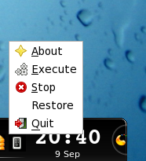
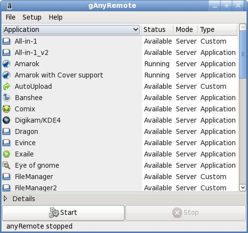
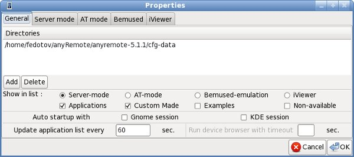
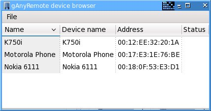
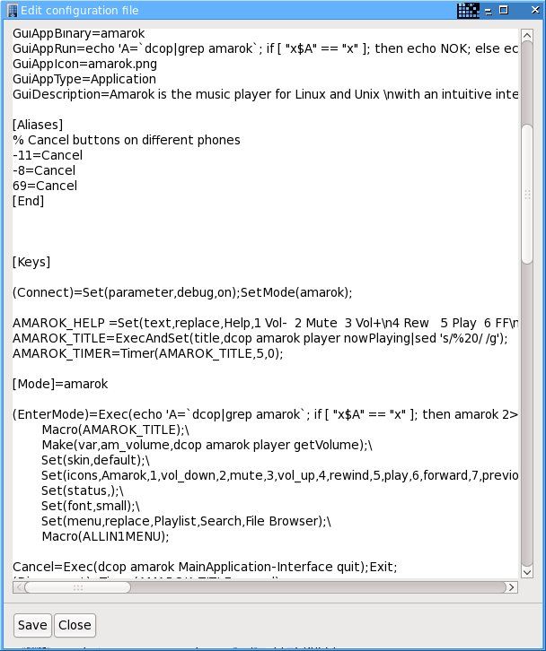

gAnyRemote
Tray icon menu.
Execute and Stop items allow to run or stop anyRemote. Preferences item opens the main window.
Main window.
Here it is possible to choose a configuration file, which will be used by anyRemote.
- Field Status can be: Not available, Available and Running
- Field Mode can be: AT, Server, Bemused, iViewer or empty.
- Field Type can be: Application, Custom, Example or empty.
It is possible to filter-out items from this list with help of filters from Preference window.
Preferences window.
Device browser
Device details

Editor window
Tips.
If You did not see icons in menus and buttons run gconf-editor and check the keys
/desktop/gnome/interface/buttons_have_icons /desktop/gnome/interface/menus_have_icons